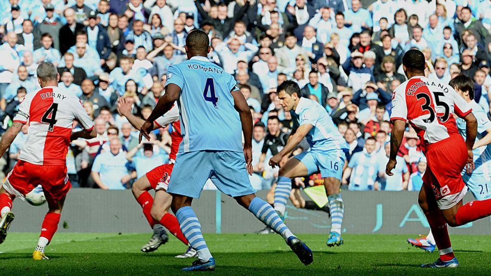

Trayectoria
Los comienzos de Sergio "Kun" Agüero se remontan a la temporada 2002/03 donde debutaria con Independiente de Avellaneda a la edad de 14 años, siendo el jugador mas joven en debutar en la primera division argentina, estuvo hasta la temporada 2005/06; en esa temporada fue vendido al Atletico de Madrid a sus 17 años por la suma de 23.000.000 de euros (28.000.000 de dolares).
Con sus 18 años ya cumplidos comenzo a jugar en el Atletico de Madrid, donde seria un jugador clave e importante para el club, fue tan grande su desempeño que llamo la atencion de muchos equipos grandes de Europa, pero el que pudo llevarselo fue el Manchester City de Inglaterra.
En la temporada 2011/12 debuto en el Manchester City, donde al principio no lo tenia en cuenta pero poco a poco fue ganando su titularidad y se lo recompenso marcando el gol mas importante de su carrera y uno de los mas importantes del Manchester City, fue el 3-2 al QPR a los 48 minutos y 20 segundos para ganar el partido y su primer premier league de forma agonica. Se convirtio en unos de los referentes del Manchester y de la premier league, convirtiendose en el maximo goleador del club y siendo parte de los 5 maximos goleadores de la premier league.
En la temporada 2020/21 ficho por el Barcelona de España donde estaria menos de un año y no rindio de la mejor manera, antes de debutar sufrio una lesion que lo alejo de las canchas unos 6 meses, cuando pudo debutar entro desde el banco y no pudo hacer mucha diferencia, a lo largo de los otros partidos se lo notaba diferente hasta que en el partido contra el Deportivo Alaves sufrio un episodio de malestar toracico, despues de eso se le hicieron estudios donde se le diagnostico problemas cardiacos que lo llevaron a su retiro a sus 33 años.
Actualmente se encuentra en mejor estado, tambien hoy en dia muchos sueñan que viaje a qatar con el seleccionado argentino como parte del equipo de direccion pero eso todavia es una duda.
